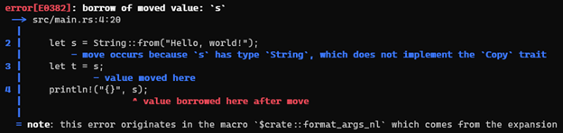
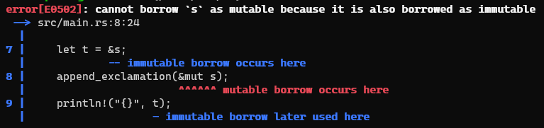
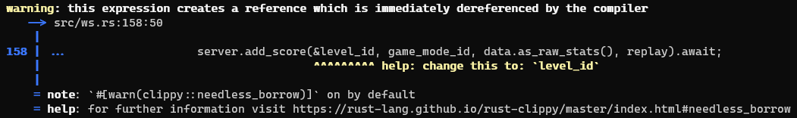

5.1 Rust Fun Facts
Rust has an unoffical mascot, named Ferris: If one attempts to use Ferris as an identifier, one will get a
compiler error (as of
Rust 1.65.0):
If one attempts to use Ferris as an identifier, one will get a
compiler error (as of
Rust 1.65.0):
Victoria Pham, vtp283@tamu.edu
CSCE 313: Introduction to Computer Systems (Professor David Kebo Houngninou)
In 2010, a new systems programming language, Rust, first debuted and continues to make its' mark within the computer science realm to this very day. Since its' first release, Rust has grown exponentially to the point of having won multiple awards, like being named the "Most Loved Language" by the Stack Overflow's Developer Survey seven times straight. As Rust continues to develop and attract attention, the question of what is Rust and what makes Rust unique has been constantly asked. Rust provides developers a better sense of security, due to its' memory safety and easy concurrency features. Within this article, we will discuss further advantages, as well as the downsides, and unique aspects in Rust programming.
Rust, Cargo, Ownership, Borrowing, Concurrency, Memory safety, Safe-by-default, Traits, Prodecural macros, Cargo clippy, Result, Option, Actix Web, Serde, Logos
Like a few well-known system programming languages: C++, Python, C#, and Python, Rust is another open-source system programming language that has been recently gaining popularity among developers due to its ability to offset unsafe coding encountered in other languages and improve performance. As a “safe-by-default” language, Rust is a multi-paradigm, high-level, general-purpose programming language known to have the capabilities to prevent undesirable coding behaviors and strong safe concurrency abilities. In the recent 2021 Stack Overflow Developer Survey with over eighty thousand developers voters, Rust won the title of the most beloved programming language for the sixth year in a row. With its' approval reign and numerous titles as a programming language, Rust continues to be a new curiosity to many new developers and computer science majors alike.
“A language empowering everyone to build reliable and efficient software,” as stated by the official Rust website. Rust is a systems programming language, which is essentially a language that allows for the designing and writing of computer programs that will allow computer hardware to interact with the programmer and other users. This programming will allow for execution of application software on the computer system, which can include but are not limited to system programs like: operating system and firmware, compilers, assemblers, I/O routines, schedulers, etc. More than just a language specification and compiler, Rust has an entire ecosystem of tools and community to utilize. Rust installations also contain many built-in tools like Cargo, a command line tool to help manage dependencies, generate documentation and run tests that help users create and maintain production-quality software. Rust also has a wide variety of development tools, like benchmarking, fuzzing, and property-based testing that are all easily accessible and popular for error checking and improvability within projects. Furthermore, Rust has a unique and welcoming community, where there are several outlets for people to ask for help or discuss the language.
The Rust programming language first made its debut in 2010. The language originated as a side project of Graydon Hoare, an employee at Mozilla, in 2006. After Mozilla saw the potential of this new language, they began investing and sponsoring this language till its release in 2010 to build their browser stack with more safer, concurrent technologies than C++. Hoare chose to create a new language due to his desire to take a lot of obvious good ideas that are well-known and appreciated in other languages, but haven't been made into widely-used system languages or have previously been deployed with languages that had poor memory models. As a result, Rust is aimed to target frustrated C++ developers, as Rust is simply much safer and less likely to crash than C or C++. Furthermore, Rust is simply easier to write, debug, and maintain overall. Now, despite Rust still being relatively new, this programming language has gained popularity in favor of older, well-known languages, like C or C++, due to its ease of learning and safety. Moving forward, the Rust Foundation has been and continues to maintain this language since 2021.
Why Rust? As a late bloomer systems programming language, the question of why a developer should put in the time to learn and develop in Rust, instead of more well-known and used languages, like C++, is constantly brought up. Rust provides many unique advantages that offset the weaknesses in these other system languages, primarily in its performance, reliability, and productivity. This section will go into the advantages and disadvantages of Rust, as well as how Rust compares with other languages, in particular C++.
Rust achieves its goals of providing memory safety and easy concurrency, as a few concepts highly unique in programming. One of Rust's most beneficial characteristics is its “borrow checker.” This ensures that references to memory are valid at all times. Rust also aims for “zero-cost abstractions,” which is a higher-level programming concept that only has a compile time cost and not a run-time cost. This means that Rust has the ability to move certain behaviors into the compile time. A few examples of this are type states, which are markers that do not contain data and therefore hold no representation of memory during run-time, and zero sized types, which are structures that contain no data. Furthermore, Rust does not have a garbage collector, but rather uses a complex, type system instead. This system gives you the ability to pick whether to store data on the stack or heap, as well as determine when memory use is complete and should be cleaned up during compile time. This helps the great reduction of memory usage, as well as improves the memory access performance.
With many advantages, Rust also provides a set of frustrations for developers as well. Due to Rust strictness in prioritizing and emphasizing memory safety during compile time, it's very common to receive compiling errors. Rust's slow compile time, compared to other languages, is a result of the fact that Rust compiles a whole package, called crates, that contains multiple modules instead of individual files. Despite this hindrance, Rust provides very clear and comprehensible error messages to direct a developer in the right direction. If this continues to be frustration to developers, they also have the ablitity to switch to Rust's unsafe mode, allowing users to use more Rust features in exchange for the reduction of Rust's compiler's restrictive behaviors. This means that within this unsafe mode, the developer is soley responsible in producing correct code, as the complier will not be checking for code correctness. Furthermore, learning rust comes with a high learning curve, and to better adapt, it is often recommended to be familiar with C++ or another object-oriented language.
As low-level programming languages, Rust is often compared to C++ in regards to performance and continues to be seen as a competitive alternative to C++. Both Rust and C++ follows a similiar compliation model. Between these languages, both have no runtime, have no garbage collection, have the ability to directly access memory, compile to native code, and operate closely to hardware. This section will focus on the differences between these two languages and the advanatages and disadvantages between the two.
| Rust | C++ | |
|---|---|---|
| Compile vs Run-time | - Rust has more requirements to pass the compiler, and as result takes more compiler time. | - C++ is easier to compile, but is more difficult to make correct and efficient programs later on. |
| Safety | - "Safe-by-default" | - Errors has the potential to bypass the compiler and result in security vulernablities and program crashes. |
| Tools | - Rust has a single standarized tool (Cargo) for all packages and dependencies. | - C++ has no standardardized tooling, although they do have a larger variety of tools available. |
| Learnability | - Rust has unique features (eg. ownership, borrowing) and patterns that makes it more challenging to learn. | - The learning curve is often referred to as a mountain, meaning C++ complicates things exponentially further in the learning process. |
Programming in Rust arguably requires significantly more mental focus than other languages, due to its strict standards and unique concepts.
Ownership
Rust uses a very unique model of managing memory, called “ownership.” This is better explained with an example. Consider this Java code:
public class Main {
public static void main(String[] args) {
String s = "Hello, world!";
String t = s;
System.out.println(s);
}
}
This code will output "Hello, world!" to the console. It seems pretty innocuous. But if we try writing the same program in Rust:
fn main() {
let s = String::from("Hello, world!");
let t = s;
println!("{}", s);
}
We get an error!
Here, we can observe the effects of ownership. When we initialized the String on line 2, the variable s actually holds ownership of the String object. Line 3 causes ownership of the String to be transferred from s to t, meaning that we can no longer use s to access the String. This is certainly not the behavior we want most of the time, so Rust supports another mechanism referred to as “borrowing.” This is a modification of the above code that compiles and runs correctly:
fn main() {
let s = String::from("Hello, world!");
let t = &s;
println!("{}", s);
}
Now, we are no longer taking ownership of the String on line 3. The ampersand (&) indicates that we “borrow” the value held by s, without changing it. Since s retains ownership of the String, it can then be used in the println! invocation on line 4.
Borrowing
Usually, we do not want to take ownership of a value so that we can allow the original owner to keep using it. Imagine this function that returns the length of a String:
fn length(s: String) -> usize {
s.len()
}
fn main() {
let s = String::from("Hello, world!");
let len = length(s);
println!("{} has length {}", s, len);
}
This code will not compile for the same reason as the previous example. The function length takes ownership of the String, so we cannot use it after the function returns. We can fix this by having the function borrow the String instead:
fn length(s: &String) -> usize {
s.len()
}
fn main() {
let s = String::from("Hello, world!");
let len = length(&s);
println!("{} has length {}", s, len);
}
We can also mutably borrow a value, which allows us to modify it without taking ownership. This is done by using the mut (mutable) keyword:
fn append_exclamation(s: &mut String) {
s.push('!');
}
fn main() {
let mut s = String::from("Hello, world!");
append_exclamation(&mut s);
println!("{}", s);
}
Rust's borrowing rules only permit either (a) one or more immutable borrows, or (b) one mutable borrow, i.e. we cannot mix immutable and mutable borrows together. This prevents us from modifying a value underneath a supposably immutable reference, which is a common source of bugs in other languages, like Javascript.
fn append_exclamation(s: &mut String) {
s.push('!');
}
fn main() {
let mut s = String::from("Hello, world!");
let t = &s;
append_exclamation(&mut s);
println!("{}", t);
}
The compiler error is:
Traits
Rust "traits" are akin to interfaces / abstract classes in C-like languages. Rust contains many traits in its standard library, all of which are used to generalize the standard libary API as much as possible. Here, we implement the PartialOrd trait for a custom Point struct, allowing us to compare two Points using the <, >, <=, and >= operators:
struct Point {
x: i32,
y: i32,
}
impl PartialOrd for Point {
fn partial_cmp(&self, other: &Point) -> Option {
if self.x < other.x && self.y < other.y {
Some(Ordering::Less)
} else if self.x > other.x && self.y > other.y {
Some(Ordering::Greater)
} else {
Some(Ordering::Equal)
}
}
}
fn main() {
let p1 = Point { x: 1, y: 2 };
let p2 = Point { x: 2, y: 3 };
println!("p1 < p2: {}", p1 < p2);
println!("p1 > p2: {}", p1 > p2);
println!("p1 <= p2: {}", p1 <= p2);
println!("p1 >= p2: {}", p1 >= p2);
}
These are some of the most common traits:
Deriving traits
Rust has a uniquely powerful feature, known as procedural macros. Procedural macros are Rust code that operates over other raw Rust code, modifies it, and outputs new Rust code, which can include trait implementations, extra structs, etc. Rust includes many procedural macros that implement various traits in its standard library. For example, we could improve our previous code with the manual PartialOrd implementation like so:
#[derive(PartialOrd)] // many more traits can be derived automatically like this!
struct Point {
x: i32,
y: i32,
}
fn main() {
let p1 = Point { x: 1, y: 2 };
let p2 = Point { x: 2, y: 3 };
println!("p1 < p2: {}", p1 < p2);
println!("p1 > p2: {}", p1 > p2);
println!("p1 <= p2: {}", p1 <= p2);
println!("p1 >= p2: {}", p1 >= p2);
}
Thread safety
In Rust, the Send trait (aka an interface in C-oriented languages) is implemented for a type if it can safely be sent to a different thread. The Rust compiler automatically implements it for any type it deems safe. There are many Rust types that implement Send, and many other types that do not.
One type that does not implement Send is Rust's pointer type, akin to C / C++'s pointers. This is understandable, because pointers only consist of a memory address. If two threads were to have pointers to the same memory address, both could mutate the underlying memory at the same time, which violates Rust's memory safety principles.Cargo Clippy
Clippy (named after Microsoft Word's Clippy) is one of many tools included with Rust's default installation that must be mentioned. It includes hundreds of lints that check our code for correctness, and provide suggestions to fix "non-Rusty" code. Here is an example of an error returned by Clippy if one adds an unneeded reference:
This section will focus on a few unique Rust programming examples and applications derived from Rust.
Result / Option
There are no exceptions or null values in Rust. Instead, errors are simply another type, specifically the Result enumeration. Rust requires that we explicitly handle all variants of a Rust enum, making many runtime errors compile errors instead.
fn main() {
let mut file = match File::create("foo.txt") {
Ok(f) => f,
Err(e) => return eprintln!(“Error when opening file: {:?}”, e),
}; // Here, we use `match` to explicitly handle the error and exit the function if it occurs
file.write_all(b"Hello, world!").unwrap(); // Here, we use `unwrap` to indicate that any error that occurs when writing to the file is fatal
}
Actix Web
This example uses the popular actix-web crate to create a simple HTTP server.
use actix_web::{web, App, HttpRequest, HttpServer, Responder};
async fn greet(req: HttpRequest) -> impl Responder {
let name = req.match_info().get("name").unwrap_or("World");
format!("Hello {}!", &name)
}
#[actix_web::main] // this is another example of a procedural macro; in this case, it generates the asynchronous runtime for us
async fn main() -> std::io::Result<()> {
HttpServer::new(|| {
App::new()
.route("/", web::get().to(greet))
.route("/{name}", web::get().to(greet))
})
.bind(("127.0.0.1", 8080))?
.run()
.await
}
Serde
This example uses the popular serde (short for "ser(ialization)de(serialization)") and serde_json crates to parse JSON data.
use serde_json::Value;
fn main() {
let data = r#"
{
"username": "RunningMan",
"score": 4000
}"#;
// the `serde_json::Value` type represents any valid JSON value
let v: Value = serde_json::from_str(data).unwrap();
// it supports indexing like in Javascript or Python
println!("{} scored {}", v["username"], v["score"]);
}
Serde is a general serialization / deserialization library; we can use serde to parse JSON data (or any serde-supported data format) directly into our Rust types.
use serde::Deserialize;
use serde_json::Value;
#[derive(Deserialize)] // serde includes procedural macros to automatically implement its Deserialize / Serialize traits
struct Entry {
username: String,
score: u32,
}
fn main() {
let data = r#"
{
"username": "RunningMan",
"score": 4000
}"#;
// we declare the type we want to deserialize the JSON into
let entry: Entry = serde_json::from_str(data).unwrap();
println!("{} scored {}", entry.username, entry.score);
}
Logos
This example might be very useful to those writing languages or compilers. The logos crate makes it incredibly easy to write very fast tokenizers.
use logos::Logos;
#[derive(Logos, Debug, PartialEq)] // logos's procedural macros generate the lexer logic for us
enum Token {
#[token("+")]
Add,
#[token("-")]
Subtract,
#[token("*")]
Multiply,
#[token("/")]
Divide,
#[regex(r"\d+")]
Number,
#[error]
#[regex(r"[ \t\n\f]+", logos::skip)] // skip whitespace
Error,
}
fn main() {
for token in Token::lexer("3 * 4 / 11 * -4") {
println!(“{:?}”, token);
}
}
Pumpkin is a browser-based multiplayer game made using Rust for the backend, and Node.js for the frontend. The objective is to avoid colliding with one's past selves (represented as red dots), while trying to complete predefined paths in maps of varying size and shape.
Rust was chosen over other compiled languages, which included Java, C++, and Go, as it guaranteed execeptional performance without garbage collection, prevented memory issues, and ensured correctness.
Try it out here.
To get started with Rust, head to the official Rust website to install it. There is also an extremely useful guide to programming in Rust, nicknamed "The Book".
There are a number of resources available to learn Rust. Here are some of the most useful ones for newcomers:
Despite being a very new language, Rust has demonstrated its ability to keep up with other more well-known lanugages, like C++ and C, and proved to be just as reliable, or even more so, in system development. Rust continues to be able to solve countless sore spots present in other languages with very minimal downsides. Within this page, we have talked about many of these advantages, like Rust's ability to provide memory safety and easy concurrency. The few downsides would include the learning curve and adapting to Rust's unique features. These features include a few of the following like: ownership, borrowing, thread safety, etc. To learn more about Rust, one can read more with The Book, a website to the introduction and documentation of Rust.
Rust has an unoffical mascot, named Ferris: If one attempts to use Ferris as an identifier, one will get a
compiler error (as of
Rust 1.65.0):
If one attempts to use Ferris as an identifier, one will get a
compiler error (as of
Rust 1.65.0):
Tam Pham, TAMU '26 - Rust Developer of 2 years
https://rustacean.net/
https://www.rust-lang.org/
https://doc.rust-lang.org/book/
https://rust-lang.github.io/rustup/faq.html
https://www.infoq.com/news/2012/08/Interview-Rust/
https://www.techopedia.com/definition/9616/system-programming
https://www.tutorialspoint.com/downsides-of-rust-programming-language
https://stackoverflow.blog/2020/01/20/what-is-rust-and-why-is-it-so-popular/
https://www.talentopia.com/news/the-rust-programming-language-its-history-and-why/
https://doc.rust-lang.org/beta/embedded-book/static-guarantees/zero-cost-abstractions.html
https://codilime.com/blog/rust-vs-cpp-the-main-differences-between-these-popular-programming-languages/
Last modified: December, 7, 2022.